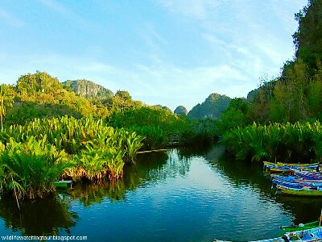

Ramang-ramang adalah nama bagi kawasan perbukitan karst di Maros, Sulawesi Selatan. Ketika berjalan di antara jajaran gunung karst itu, saya teringat dengan gugusan serupa di perairan Raja Ampat seperti di Piaynemo, Wayag dan Laguna Ikan. Bentuknya mirip sekali. Di Ramang-ramang, pegunungan ini dikelilingi hamparan sawah dan padang rumput sedangkan yang di Raja Ampat dikelilingi oleh laut biru. Keduanya memiliki keunikan dan keindahan tersendiri.
Untuk memasuki kawasan ini, pertama-tama kami menggunakan perahu motor menyusuri sungai. Pohon-pohon nipa tumbuh di kedua sisinya. Ada beberapa ekor burung Raja-udang Kerah (Collared Kingfisher) yang terbang melintasi sungai saat kami lewat. Kami berhenti sesaat di sebuah restoran dan menikmati jus buah di sana dan mengamati burung selama kurang lebih setengah jam. Setelah itu, perjalanan ke dalam wilayah karst kami lanjutlan lagi.
 Lahan Pertanian dan Ternak Sapi di Ramang-ramang
Lahan Pertanian dan Ternak Sapi di Ramang-ramangPemandangan Sungai dan Pegunungan Karst di Ramang-ramang Sulawesi Selatan
Dengan berjalan kaki, saya, dan 4 wisatawan Taiwan beserta pemandu lokal menjelajahi kawasan itu hingga ke berbagai penjuru, melewati perkampungan penduduk setempat. Warga senang melihat wisatawan yang berkunjung ke sana. Tujuan kami bukan hanya untuk melihat pemandangan tetapi juga untuk mengamati burung dan satwa liar. Ada burung Yellow-billed Malkoha, Sulawesi Pygmy Woodpecker, Black-ringed White Eye. Setelah berjalan jauh ke dalam gunung-gunung karst, kami melihat puluhan kera Moor Macaque berlarian dan bergelantungan di pepohonan yang tumbuh di dinding karst yang terjal. Ada juga kuskus yang duduk di dahan pohon sambil memperhatikan kami yang berjalan di padang rumput.
Cuaca siang itu terasa panas sekali karena musim kemarau. Lahan persawahan nampak kering kerontang. Di sana-sini masih nampak bekas potongan sabit di tanaman padi yang bagian akarnya masih menancap tapi telah kering di permukaan tanah. Ada banyak sapi yang berkeliaran di sana. Rumah–rumah penduduk kebanyakan masih berupa rumah panggung atau rumah kayu. Ditulis oleh Charles Roring.